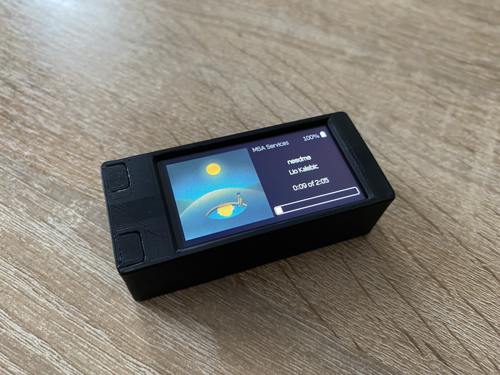

Benjamín Collu
benjamincollu@gmail.com
UNIZA
C++, C#, Java, PHP, Python
My name is Benjamín Collu, I'm 20 years old and I come from the town of Spišská Belá, Slovakia.
I am currently a student at the Faculty of Management Science and Informatics at the University of Žilina, where I focus on Information and Network Technologies.
I am passionate about programming, embedded systems, graphics design and modern technologies. I enjoy applying my knowledge in practice, especially in projects involving microcontrollers, automation, and software development. In my free time, I focus on programming, UI/UX design, and graphic design.
I am currently studying at the Faculty of Management Science and Informatics, University of Žilina, enrolled in the study programme Information and Network Technologies (2024 – present).
Previously, I graduated from the Private Secondary Vocational School in Poprad (2020 – 2024), where I specialized in Intelligent Technologies. During my studies, I developed a strong foundation in programming, electronics, and applied technologies.
I dedicate a significant amount of my time to personal projects focused on microcontrollers, programming, and system design.
My technical skill set includes Java, C#, C++, Python, PHP, along with experience in Linux, Docker, networking, and system administration. I am proficient in Adobe Illustrator and Adobe Photoshop.
I have a strong interest in embedded systems, particularly microcontroller platforms such as the ESP32.
As part of my graduation project, I developed deskhelper – a smart assistant device designed to simplify everyday workflows. The device features a graphical interface displaying commonly used tools such as a Spotify player, calendar, and time dashboard.
The system supports user interaction through physical buttons and allows further expansion via custom applications utilizing the device’s I/O pins.
In addition to development, I am actively involved at the university as a student representative for my study programme. I also contribute to creating networking configuration manuals and assist in managing networking laboratories at the Department of Communications and Information Systems.
